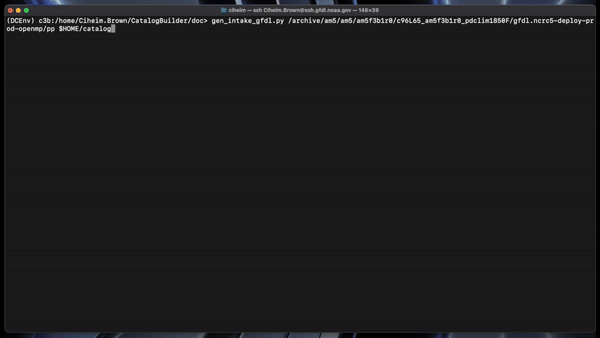
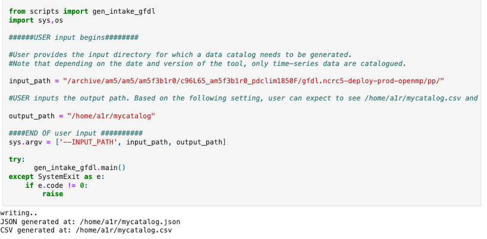

Generating data catalogs¶
There are a few ways to use the catalog builder.
Installation¶
Recommended approach: Install as a conda package
conda install intakebuilder -c noaa-gfdl
Alternatively, you may clone the git repository and create your conda environment using the environment.yml in the git repository.
git clone https://github.com/aradhakrishnanGFDL/CatalogBuilder.git
conda env create -f environment_intake.yml
Expected output¶
A JSON catalog specification file and a CSV catalog in the specfied output directory with the specified name.
Using conda package¶
1. Install the package using conda:
conda install intakebuilder -c noaa-gfdl
This package contains all dependencies needed to run the catalog builder.
2. Add conda environment’s site packages to PATH
See example below.
setenv PATH ${PATH}:${CONDA_PREFIX}/lib/python3.1/site-packages/scripts/
3. Call the builder
Catalogs are generated by the following command: gen_intake_gfdl.py <INPUT_PATH> <OUTPUT_PATH>
Output path argumment should end with the desired output filename WITHOUT a file ending. See example below.
gen_intake_gfdl.py /archive/am5/am5/am5f3b1r0/c96L65_am5f3b1r0_pdclim1850F/gfdl.ncrc5-deploy-prod-openmp/pp $HOME/catalog
This would create a catalog.csv and catalog.json in the user’s home directory.
{kind=link}
See Flags here.
From Jupyter Notebook¶
Refer to this notebook to see how you can generate catalogs from a Jupyter Notebook
You may also run a simple python script and generate the catalogs. Here is another example of a runner script that uses a configuration file.
#!/usr/bin/env python
from scripts import gen_intake_gfdl
import sys
input_path = "/archive/am5/am5/am5f3b1r0/c96L65_am5f3b1r0_pdclim1850F/gfdl.ncrc5-deploy-prod-openmp/pp/"
output_path = "$HOME/catalog"
sys.argv = ['INPUT_PATH', input_path, output_path]
print(sys.argv)
gen_intake_gfdl.main()
Using FRE-CLI (GFDL only)¶
1. Activate conda environment
conda activate /nbhome/fms/conda/envs/fre-cli
2. Call the builder
Catalogs are generated by the following command: fre catalog buildcatalog <INPUT_PATH> <OUTPUT_PATH>
(OUTPUT_PATH should end with the desired output filename WITHOUT a file ending) See example below.
fre catalog buildcatalog --overwrite /archive/path_to_data_dir ~/output
See Flags here.
Optional Configuration¶
If you want to work with datasets and directories that are not quite GFDL post-processed directory oriented:
Catalog headers (column names) are set with the HEADER LIST variable. The OUTPUT PATH TEMPLATE variable controls the expected directory structure of input data. Both can be configured by editing intakebuilder/builderconfig.py.
#Catalog Headers
#The headerlist is expected column names in your catalog/csv file. This is usually determined by the users in conjuction
#with the ESM collection specification standards and the appropriate workflows.
headerlist = ["activity_id", "institution_id", "source_id", "experiment_id",
"frequency", "modeling_realm", "table_id",
"member_id", "grid_label", "variable_id",
"temporal_subset", "chunk_freq","grid_label","platform","dimensions","cell_methods","path"]
#Expected Directory Structure
#For a directory structure like /archive/am5/am5/am5f3b1r0/c96L65_am5f3b1r0_pdclim1850F/gfdl.ncrc5-deploy-prod-openmp/pp the output_path_template is set as follows:
#We have NA in values that do not match up with any of the expected headerlist (CSV columns), otherwise we simply specify the associated header name in the appropriate place. E.g. The third directory in the PP path example above is the model (source_id), so the third list value in output_path_template is set to 'source_id'. We make sure this is a valid value in headerlist as well.
#The fourth directory is am5f3b1r0 which does not map to an existing header value. So we simply set NA in output_path_template for the fourth value.
output_path_template = ['NA','NA','source_id','NA','experiment_id','platform','custom_pp','modeling_realm','cell_methods','frequency','chunk_freq']
output_file_template = ['modeling_realm','temporal_subset','variable_id']
Flags¶
overwrite - Overwrite an existing catalog at the given output path
append - Append (without headerlist) to an existing catalog at the given output path